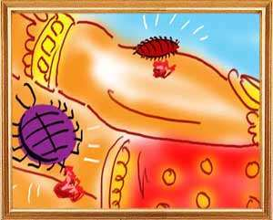

Once upon a time a bug named Mandavisarpini made for itself a small home in the folds of the milk-white sheets of linen spread on the king's ornamental bed. One day, the bug saw a flea drifting into the king's bedroom and told the flea that he had come to a wrong place and asked him to leave before somebody noticed him.
The flea, whose name was Agnimukha, said, “Oh venerable sir, it is not proper for you to ask a guest to leave even if he is a wicked person. You must welcome him, ask him about his health, say words that comfort him and request him to take rest. That is how good hosts treat their guests. Besides, I have tasted the blood of a variety of men and animals. Never did I taste royal blood. The king's blood is a compound of rich foods and is bound to taste rich. Please permit me to relish this delicacy.”
The Bug and The Poor FleaThe flea continued, “Everything we do in this world we do to slake our hunger. I have come to you in search of food. It is not proper for you to siphon off the king's blood all alone. You should share it with me also.”
The bug told him, “oh, flea, I suck the blood of the king when he is fast asleep. You are impatient. You have to wait till I finish my job. After me, you can have your fill.” The flea agreed.
Meanwhile, the king entered his bedroom to sleep. But the impatient flea began feasting on the king's blood even before he went to sleep. Stung by his bite, the king rose from his bed and asked his servants to look for what was in the bed that caused him discomfort. The king's men pulled the linen off the bed and examined it closely. Before they could him, the flea sneaked into a recess of the bed. The servants found the poor bug and killed him at once.